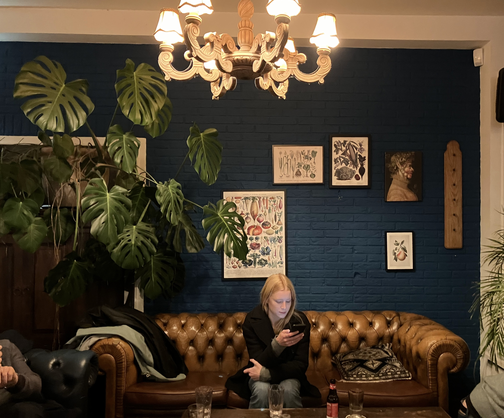

Restaurant Pof
Over Pof
Restaurant Pof bevindt zich op een voormalig sportcomplex in Amsterdam Noord. Pof onderscheidt zich van andere restaurants door op op vele vlakken duurzaam te werk te gaan. Zo houden ze bijvoorbeeld rekening mee met waar ze hun ingredienten vandaan halen, of hoe ze zo minmogelijk voedsel kunnen verspillen. Klik hier om daar meer over te lezen.